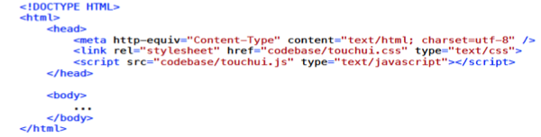

DHTMLX Touch is a javascript framework for creating HTML5-based mobile web applications. This framework provides a wide variety of UI components ranging from lists, forms to calendars and video. Event Handling of click/keyboard events as well as touch events is supported. Data Storage on client side(offline storage) is one of the features which make DHTMLX Touch more attractive.
This installation guide will help you setup environment to code using DHTMLX Touch provided libraries. This part of the guide is organised in three sections. In first section contains links for downloading DHTMLX Touch libraries, how to inlcude these libraries into your code and related documentation. Second section, details about the use of DHTMLX Touch Visual Designer Tool which is available online. The last section, explains the tools you would need to test your mobile web applications.
In order to use libraries provided by DHTMLX Touch framework, you need to download them on system and reference them as and when required. In the next section, we discuss about how to import these libraries in your project.
Link for downloading DHTMLX Touch library: Download DHTMLX Touch
The following code block clearly illustrates the way of including above files using relative path.
For server side integration, libraries for data connectors are present in codebase subdirectory listed above. DHTMLX Touch supports data connectors for PHP, Java and Cold Fusion.
DHTMLX Touch’s documentation is well organized and maintained and is of great help while developing applications using this framework. Access DHTMLX Touch Documentation here.
Developing mobile web applications require minimal effort as far as development and testing tools are concerned. You can use any code editor or IDE to write code. However, preferable setting would to be use an IDE which supports Javascript based development. Testing of mobile web applications developed using DHTMLX Touch can be done using WebKit browsers (Safari, Chrome, etc.) and Firefox 3.6+, Opera, IE8+ or in case you have troubles with the visual elements, use of Android emulator(or real device)’s browser is preferred.
- Design Tools
Developing user interface using DHTMLX Touch can be easily done using an online designer tool, DHTMLX Touch Visual Designer Tool . Details about this tool can be found in next section.
- Code Editors
Any code editor or IDE. Preferred : IDE supporting JS based development. OR Standalone Apatana IDE for JS based development. OR Eclipse IDE with Aptana Plugin.
- Testing Tools
- On Desktop PC - WebKit Browsers(Safari, Chrome), Firefox 3.6+, Opera or IE8+
- Mobile Device - Android Emulator’s Native Browser or Android Device Native Browser
DHTMLX Touch Visual Designer Tool is an online designer tool for developing UI interface for mobile web applications developed using DHTMLX Touch . This tool offers a drag-n-drop interface for designing UI of an application. Once you are done building the UI interface of an application, click on “Get Config” button on right hand side top corner to get the associated code.
Code obtained by “get config” option has be to be placed with dhx.ui { } component within the script.